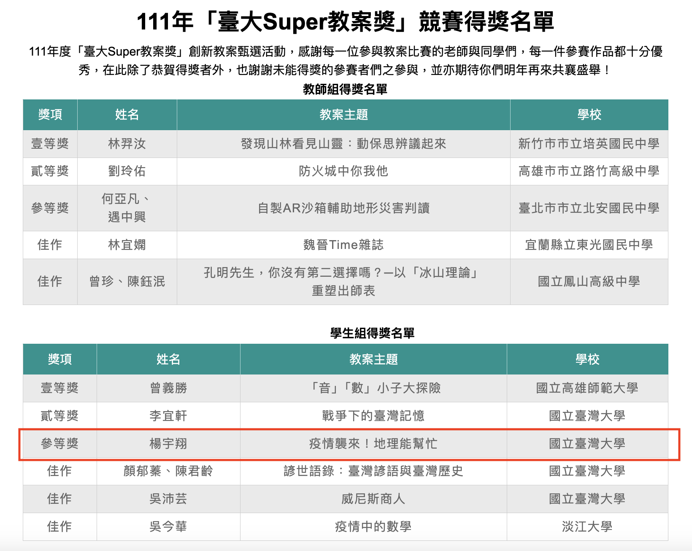
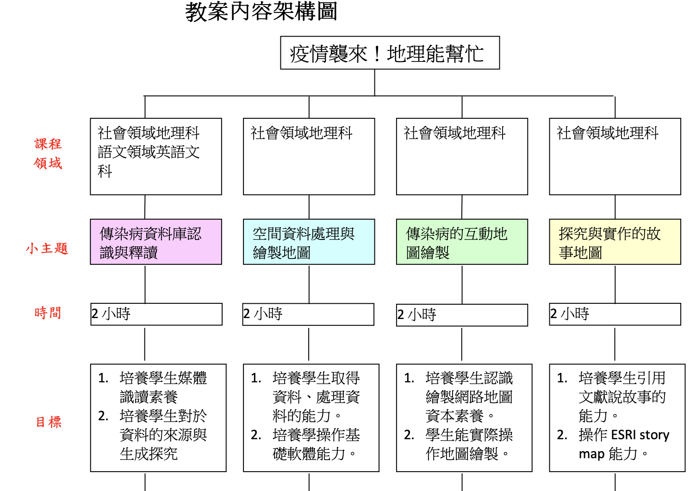
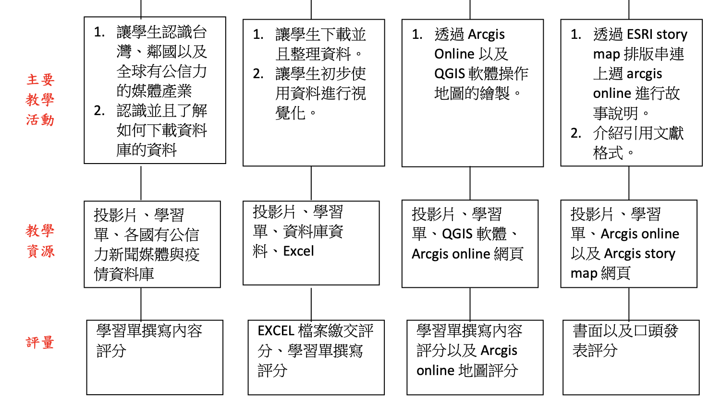
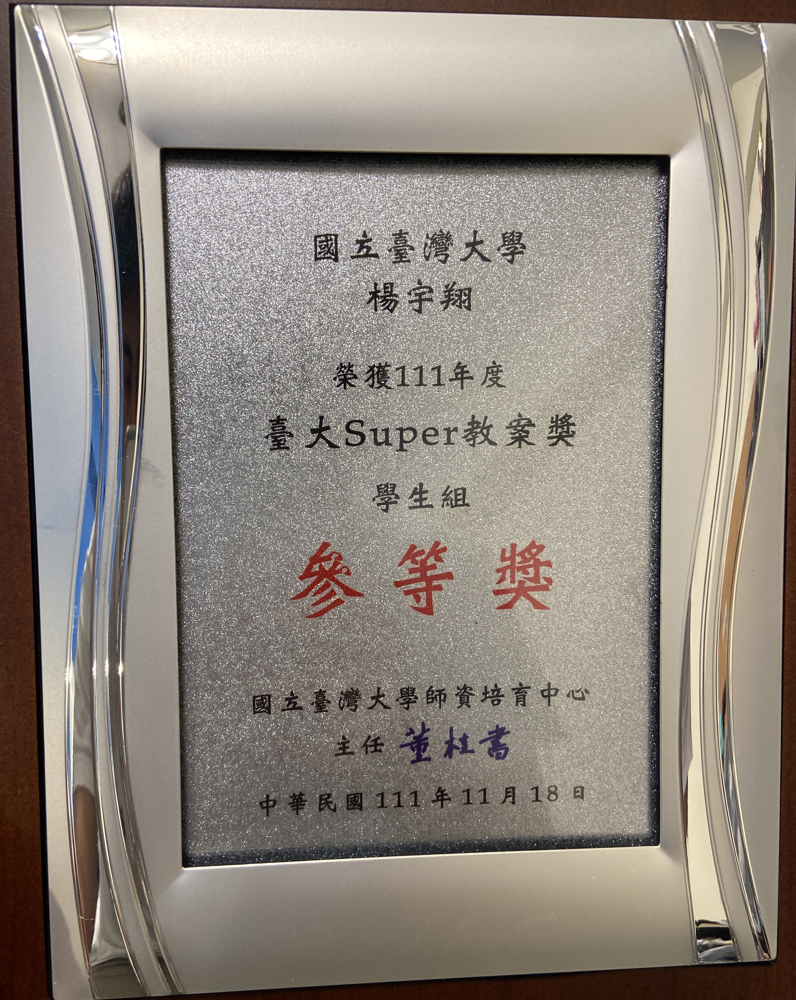

I joined Geographical Information Science Lab in the Department of Geography in National Taiwan University. My academic supervisor is Professor Tzai-Hung Wen, Ph.D.
2022 Here comes the Pandemic?! Geography can help.
2022 Super Lesson Plan Competition, the 3rd Place
教案名稱：疫情襲來！地理能幫忙
  新型冠狀病毒肺炎疫情(COVID-19)於 2019 年年末開始散播，時至 2022 年，已經對於世界各個國家以及社會造成巨大的影響，而台灣受到的 影響世界較晚發生，但爆發本土疫情時，包括隔離、停課、禁止內用用餐 等政策，也使得人們遭受較為限制的生活。在疫情得時候，「地理」學科 可以做什麼幫忙呢?
從實名制口罩開始，就有台灣行政院推出的「藥局線上地圖」，能夠 網路即時去查找哪裡可以買到實名制的口罩，也透過衛生福利部公布的確 診的位置，能了解哪裡的感染率、感染數量是比較高的，盡量避開，這些 都是地理學科在地理學上面的應用。這門課，希望從地理資訊的「識讀」 開始，更深一步了解地理資料的型態，最後希望學生能有一個作品集，能 放在「學習歷程檔案」當中，對於申請大學有一定程度的助益。
教學內容彼此之間具有相關聯，且從一開始對於資料、報導的認識， 到對於數值資料的取得與處理，到後半段利用數值資料來進行視覺化以及 自行的詮釋，以及尾聲對於疫情與生活環境的延伸思考，透過提供大量的 公開資料的資源，以及網路的平台，引導學生進行探究與實作。
本次教案學習重點，從圖表、地圖、資料的判讀開始，到資料的取得、處理、視覺 化、呈現，預計帶領學生，從 0 開始，一步一步培養用數據說故事的能力。
其學習表現，是希望學生得具有批判性思考的素養，媒體識讀的能力，並且能具有 基礎的英文能力，能閱讀世界主要幾個新聞媒體，與取得資料庫資料的能力，最後是 如何下載資料，理解資料格式，針對資料進行視覺化、並且根據文獻進行一個具有脈 絡性的報告。
在評量方面，學習表現除了每個單元的學習單，以及教學課程結束後的口頭發表與 書面報告。這當中，包含了同儕互評表，結合形成性評量、總結性評量，其中的評量 層次，有來自授課教師針對學習單以及報告發表的垂直評量，也與同儕之間相互評論 的水平評量，來評定學生在這一堂課表現。
學習內容，主要是希望學生能主動結合與疫情有關各大網路資料庫、透過教師設計 的學習單引導，最後做出一個小組專題。其課程內容主要是學習疫情新聞的媒體釋 讀、判斷、並且學習如何利用網路上的資料庫，下載資料，理解資料格式以及欄位、 並且如何利用軟體處理、清洗資料，最後將資料視覺化成圖表以及地圖進行分析與詮 釋，並且引用文獻，說一個有頭有尾的故事
Complete file Download
2022 Super Lesson Plan Competition, the 3rd Place, Here comes the Pandemic?! Geography can help, YANG YU HSIANG
